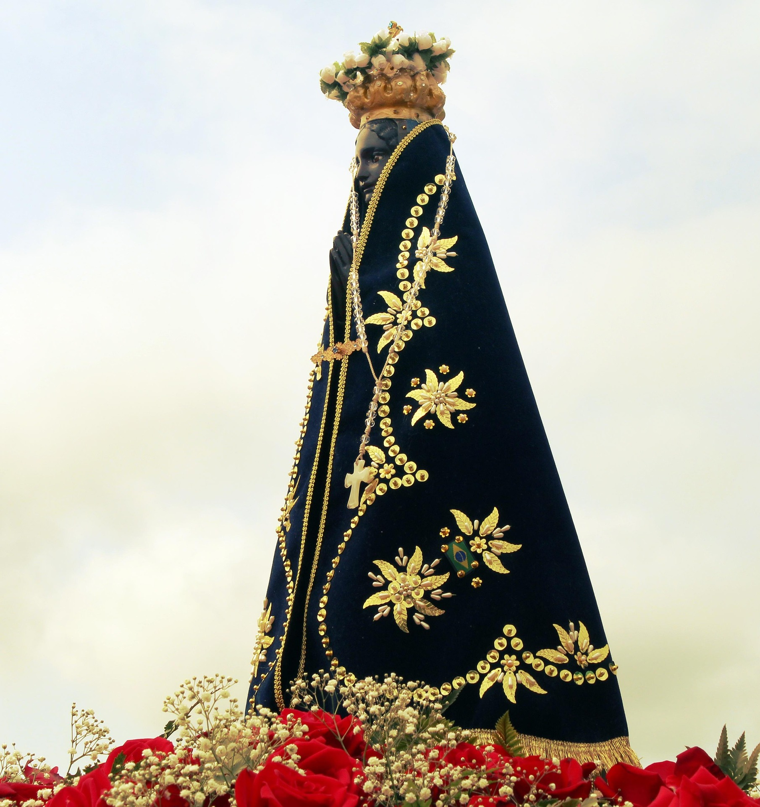
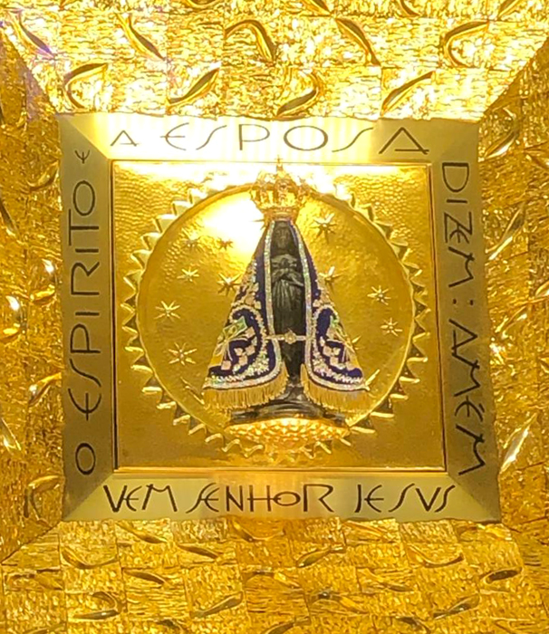
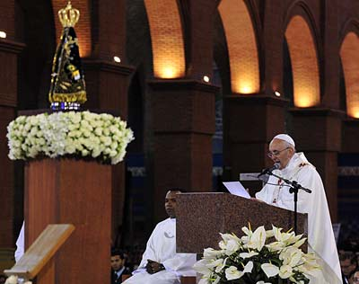
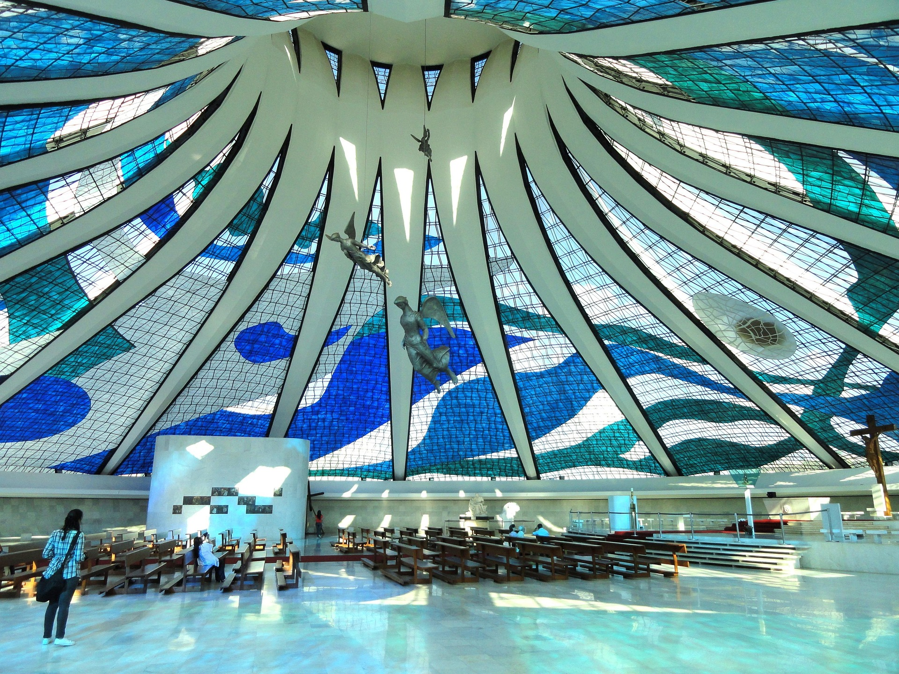
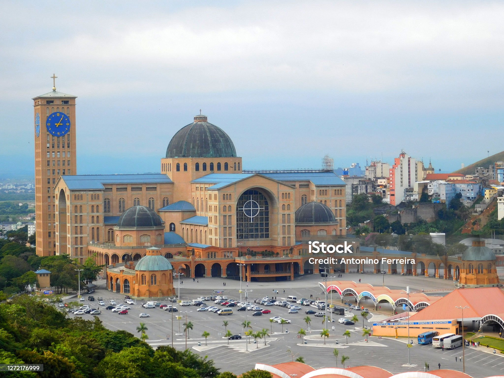

Visita do Papa ao Santuario Nacional
O Papa Francisco visitou o Santuário Nacional de Nossa Senhora Aparecida em 24 de julho de 2013, durante sua primeira viagem ao Brasil. Na ocasião, ele venerou a imagem de Nossa Senhora Aparecida e celebrou uma Santa Missa na Basílica. Sua visita aconteceu durante a Jornada Mundial da Juventude (JMJ) Rio 2013. Francisco confiou a Maria a juventude e o povo brasileiro. Em sua homilia, destacou a esperança, a alegria e a confiança em Deus. Também pediu a proteção de Nossa Senhora para o Brasil e a América Latina. Antes de partir, pediu aos fiéis: “Rezem por mim.
Veja Mais
Catedral de Brasilia
A Catedral Metropolitana de Brasília é um dos principais símbolos da capital do Brasil. Foi projetada pelo arquiteto Oscar Niemeyer e inaugurada em 1970. Seu nome oficial é Catedral Metropolitana Nossa Senhora Aparecida. A igreja possui uma arquitetura moderna, com grandes vitrais e colunas curvas. Em seu interior estão esculturas de anjos suspensos, que chamam a atenção dos visitantes. A Catedral é dedicada a Nossa Senhora Aparecida, padroeira do Brasil. É um importante local de oração, celebrações religiosas e visitação turística.
Venha Visitar
Santuario Nacional de Aparecida
O Santuário Nacional de Nossa Senhora Aparecida fica em Aparecida, São Paulo. É o maior templo católico do Brasil e um dos maiores do mundo. O Santuário é dedicado a Nossa Senhora Aparecida, padroeira do Brasil. A imagem da santa foi encontrada no Rio Paraíba do Sul, em 1717. Milhões de fiéis visitam o local todos os anos. O Santuário recebe missas, romarias e grandes celebrações religiosas. É um dos principais destinos de peregrinação católica da América Latina.
Venha ser RomeiroHistória de Nossa Senhora Aparecida
A história de Nossa Senhora Aparecida começou em 1717, quando três pescadores — João Alves, Felipe Pedroso e Domingos Garcia — estavam pescando no rio Paraíba do Sul, em São Paulo. Depois de várias tentativas sem conseguir peixes, João Alves lançou a rede e encontrou uma pequena imagem de Nossa Senhora, sem a cabeça. Em seguida, ao lançar a rede novamente, encontrou a cabeça da imagem. Depois disso, a pesca foi muito abundante.
A imagem encontrada era de Nossa Senhora da Conceição, feita de barro. Os pescadores levaram a imagem para casa e começaram a rezar diante dela. Com o tempo, outras pessoas passaram a visitar o local para fazer orações e agradecer por graças recebidas. A devoção cresceu cada vez mais, e a pequena imagem passou a ser chamada de Nossa Senhora Aparecida.
Em 1930, o papa Pio XI declarou Nossa Senhora Aparecida Padroeira do Brasil. Atualmente, milhões de pessoas visitam o Santuário Nacional de Aparecida, em São Paulo, para rezar e homenageá-la. Sua festa é celebrada no dia 12 de outubro, mesma data em que, no Brasil, comemoramos o Dia das Crianças.